Calendar Alerts
Your next meeting on a Stream Deck key, counting down in color so you're never caught by surprise.
Free and open source. For macOS 14 or later and Stream Deck 6.4 or later.
A countdown you can read from across the desk
The key shows the title of your next event today and how long until it starts. As it gets closer, the color changes, so a glance tells you how much time you have.
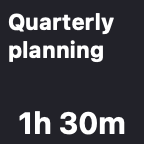
60 min or moreHours and minutes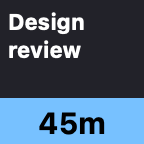
31–59 minLight blue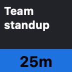
16–30 minBlue- 11–15 minYellow
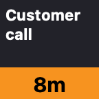
6–10 minOrange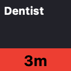
1–5 minRed- Final minuteFlashing NOW
What it does
One key that keeps an eye on your calendar, so you don't have to.
Color-coded countdown
Light blue, blue, yellow, orange and red as the event gets closer, then a flashing NOW in the final minute.
An alert you'll hear
Your Mac's alert sound plays at 60, 30, 15 and 5 minutes before each event. Pick other times, every minute for the last five, or turn it off.
Only what's still to come
The key shows the next event today. Cancelled events and events you've declined are skipped.
Birthdays and holidays
When the meetings are over, the key shows today's all-day event, marked All day, until a time you choose. Or leave all-day events off.
Press to open the event
Pressing the key opens your calendar app or web calendar, and where it can, goes straight to the event it's counting down to.
A key for each part of your life
Every key has its own calendars and settings: one for work, another for the family.
Tidy titles
A leading room number is trimmed, so "101 Team Standup" fits as "Team Standup".
Tonight's moon when you're done
When there's nothing left today, the key shows the actual phase of tonight's moon, or another image you choose.
Private by design
Your calendars are read on your Mac and never leave it. There's no account, no tracking and no cloud service.
Press the key, see the meeting
Choose what the key opens in its settings: Calendar, Fantastical, BusyCal, Outlook, Zoom, Things and the other calendar, meeting and task apps you have installed, a web calendar such as Google Calendar, Outlook on the web, Outlook.com, iCloud or Proton Calendar, any other app, or any web page.
Where the app supports it, the press takes you to the event the key is counting down to. When there are no more events today, it just opens the app.
| Open in | Pressing the key shows |
|---|---|
| Calendar | The event |
| BusyCal | The event |
| Notion Calendar | The event, for accounts where macOS knows the email address |
| Fantastical | The event's day |
| Google Calendar | The event's day, in the event's Google account |
| Anything else | The app or page, as it last was |
When the day is done
After your last event, the key shows something nicer than a blank square. Pick the one you like in the key's settings.
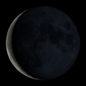
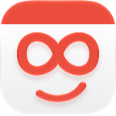
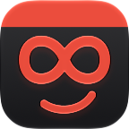
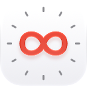
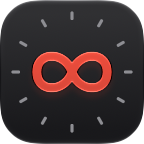
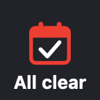
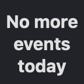
There are also ✅, 👍 and 🌙 emoji. Or choose Your own message… and type what the key should say, sized to fit, or Your own image… and drop in any picture.
Install in a minute
The installer is signed and notarized by Apple, so it opens like any other download.
- macOS 14 Sonoma or later
- Stream Deck app 6.4 or later
- Any Stream Deck with keys
- Download the plugin. Get com.joeangell.calendar-alerts.streamDeckPlugin from the latest release.
- Double-click it. The Stream Deck app opens and asks to install the plugin.
- Drag it onto a key. In the action list, find the Calendar Alerts group and drag Next Appointment onto a key.
- Allow calendar access. When macOS asks whether "StreamDeck Calendar Alerts" can access your calendars, click Allow.
To update, download and double-click the newer installer the same way. You can also install it by hand or build it from source.
Credits
Standing on the shoulders of some good ideas.
The idea and the colors
The idea, and the colors for each stage of the countdown, come from TJ Luoma's icalbuddy-km-and-stream-deck, which uses icalBuddy and Keyboard Maestro to show the time until your next meeting on a Stream Deck key.
Shortcuts, before the plugin
Before this plugin there was a Shortcuts version, an idea that came from ringmaster's iCal Daily Schedule via iOS/OSX Shortcut on the Obsidian forum.
The moon
The moon-phase images are courtesy of NASA's Scientific Visualization Studio, from its Dial-A-Moon gallery, made with data from NASA's Lunar Reconnaissance Orbiter.
Perpetual
The plugin icon, the smiling calendar and the infinity clock are from my app Perpetual, and the moon phase is worked out the way Perpetual does it. The other images are drawn in code.
Opening events
Opening an event in Apple Calendar uses the link that MeetingBar uses. The other apps' links come from their own documentation: Fantastical, BusyCal and Notion Calendar.